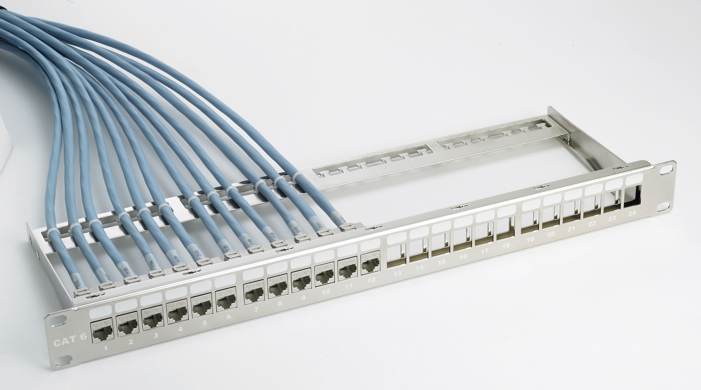

Preguntas de la Actividad
1. ¿Qué son los componentes pasivos en la Red?
Los componentes pasivos de la red son aquellos que no requieren energía eléctrica para funcionar. Estos incluyen los cables, conectores y otros elementos que permiten la transmisión de datos sin realizar ningún procesamiento activo de la señal. Su función principal es proporcionar el medio físico por el cual se transmiten los datos, sin ninguna interacción electrónica o procesamiento adicional.
2. Descripción técnica de cada componente pasivo con su respectiva imagen
- RJ45
El conector RJ45 es una interfaz física comúnmente utilizada para la terminación de cables en redes Ethernet. Conecta dispositivos de red mediante cables UTP o STP, permitiendo la transmisión de datos. Este conector tiene ocho pines que permiten la conexión de cuatro pares de cables trenzados.
 - Jacks o Keystone
Son conectores modulares hembra que se usan en paneles de parcheo y placas de pared para conectar cables de red. Se diseñan para adaptarse a diferentes tipos de cables, como el UTP, y permiten una instalación sencilla en redes estructuradas.
- Cable UTP
El cable UTP (Unshielded Twisted Pair) es uno de los más comunes en las redes Ethernet. Está compuesto por pares de cables de cobre trenzados entre sí para minimizar interferencias electromagnéticas, y se utiliza en la transmisión de datos y voz en distancias cortas y medias.
- Patch Panel
El Patch Panel o panel de parcheo es un dispositivo que permite la interconexión ordenada de múltiples cables de red. Facilita el mantenimiento y la gestión de conexiones en redes estructuradas, y se utiliza como punto de conexión central entre equipos activos y cables de red.
- Patch Cord
Es un cable corto con conectores en ambos extremos, utilizado para interconectar equipos de red o para conectar un dispositivo a un Patch Panel o a una toma de red. Los Patch Cords son esenciales en la creación de redes flexibles y modificables.
- Fibra óptica
La fibra óptica es un medio de transmisión que utiliza pulsos de luz para transportar datos a grandes velocidades y largas distancias. Es ampliamente usada en redes de alto rendimiento, ya que ofrece mayor capacidad y menor atenuación que los cables de cobre tradicionales.

- Canaletas
Las canaletas son conductos protectores que se utilizan para organizar y proteger los cables de red, eléctricos y de otros tipos. Ayudan a mantener el cableado estructurado en buen estado y a evitar accidentes o daños en las conexiones.
3. ¿Qué son los componentes activos en la Red?
Los componentes activos de la red son aquellos que requieren energía eléctrica para funcionar y que intervienen en el procesamiento de los datos o la señal. Estos componentes, como routers, switches y puntos de acceso, realizan funciones críticas como la amplificación de la señal, el enrutamiento de datos entre redes o la conexión de dispositivos a internet. Sin ellos, la transmisión eficiente y segura de datos no sería posible.
4. Descripción técnica de cada componente activo
- Switch
Un switch es un dispositivo de red que permite la interconexión de varios dispositivos dentro de una misma red local (LAN). Distribuye los paquetes de datos únicamente a los dispositivos a los que están destinados, optimizando la velocidad y el uso del ancho de banda en una red.
- Router
El router es un dispositivo que permite la interconexión de diferentes redes, como una red local con internet. Se encarga de dirigir los paquetes de datos hacia su destino final, eligiendo la mejor ruta posible y gestionando el tráfico entre redes.
- Tarjeta de red
Una tarjeta de red, también conocida como NIC (Network Interface Card), es un componente de hardware que permite a un dispositivo, como un ordenador o servidor, conectarse a una red, ya sea mediante cable o de forma inalámbrica.
- Interruptor inteligente Wifi
Un interruptor inteligente Wifi permite controlar dispositivos eléctricos conectados a la red mediante una aplicación o asistente virtual, aprovechando la conectividad inalámbrica para gestionar su encendido y apagado de forma remota.
- Access Point
Un Access Point o punto de acceso es un dispositivo que permite conectar dispositivos inalámbricos a una red cableada. Extiende la cobertura de una red Wi-Fi, permitiendo a múltiples usuarios conectarse a internet o a una red local sin la necesidad de cables.
Tarea de Investigación 1
5. Herramientas utilizadas para realizar cableado estructurado
- Ponchadora
La ponchadora es una herramienta utilizada para insertar y fijar cables en un conector o un panel de parcheo. Es esencial para la instalación de cableado estructurado, asegurando una conexión segura y fiable entre los diferentes componentes de red.
- Crimpadora
La crimpadora es una herramienta manual utilizada para unir físicamente un conector al cableado, como en el caso de los conectores RJ45 con los cables UTP. Es vital para garantizar una conexión eléctrica adecuada.
- Desforradora
La desforradora se utiliza para quitar el recubrimiento externo de los cables de red, exponiendo los pares de cables sin dañarlos. Es una herramienta indispensable en la preparación del cableado para su terminación o conexión.
- Tester/probador de cables
Es un dispositivo utilizado para verificar la integridad y continuidad de un cable de red, asegurándose de que no haya fallos en la conexión. El probador de cables detecta cortes, cortocircuitos y errores en el cableado estructurado.
6. ¿Qué es el cableado horizontal?
El cableado horizontal es el sistema de cableado que conecta los dispositivos de usuario final a los puntos de red intermedios dentro de una misma planta de un edificio. Este cableado se extiende desde el área de trabajo hasta el cuarto de telecomunicaciones, utilizando generalmente cables UTP o fibra óptica. Es una parte esencial de las infraestructuras de red y se diseña para soportar aplicaciones de voz, datos y video en un entorno comercial o residencial.
7. ¿Qué es el cableado vertical o backbone? Agregue imágenes de ejemplo
El cableado vertical, también conocido como backbone, conecta diferentes pisos o áreas dentro de un edificio o entre edificios en una red empresarial. Este tipo de cableado es crucial para conectar diferentes segmentos de red y generalmente utiliza cables de fibra óptica o cables de cobre de alta capacidad para transportar grandes cantidades de datos entre las salas de servidores, cuartos de telecomunicaciones o armarios de distribución.
8. Investigue los tipos de cables para el sistema de cableado horizontal
- Cable UTP (Unshielded Twisted Pair)
El cable UTP es el tipo más comúnmente utilizado en redes Ethernet para cableado horizontal. Está compuesto por pares de cables trenzados que ayudan a reducir la interferencia electromagnética sin necesidad de un blindaje externo. Es económico y fácil de instalar, lo que lo hace adecuado para la mayoría de las aplicaciones de redes locales.
- Cable FTP (Foiled Twisted Pair)
El cable FTP es similar al UTP, pero con una capa adicional de blindaje de aluminio que rodea a los pares trenzados. Este blindaje reduce aún más las interferencias electromagnéticas, haciéndolo adecuado para entornos con mayor ruido eléctrico o donde se requiere mayor integridad en la transmisión de datos.
9. Investigue la normativa para hacer cables de red (Clase A y B)
Las normas de cableado establecen cómo se deben organizar los pares de cables en los conectores RJ45. Existen dos normas principales:
- Norma T568A: Es la más usada en instalaciones residenciales, donde los pares verdes van primero. Este estándar se utiliza para garantizar que todas las conexiones de cables sigan el mismo patrón, lo que permite la interoperabilidad y consistencia en las instalaciones.
- Norma T568B: Utilizada en la mayoría de las instalaciones comerciales, donde los pares naranjas van primero. Aunque ambas normas son funcionalmente equivalentes, T568B es más común en entornos comerciales por su compatibilidad con equipos de red más antiguos.
10. ¿Qué es la fibra óptica y cómo se clasifica?
La fibra óptica es un medio de transmisión que utiliza pulsos de luz para transmitir datos. Su diseño permite que los datos viajen a velocidades extremadamente rápidas y con menor pérdida de señal en largas distancias, en comparación con los cables de cobre. Se clasifica en dos tipos:
- Monomodo: Se utiliza para largas distancias, debido a su menor atenuación y mayor capacidad de transmisión de datos. Es común en infraestructuras de telecomunicaciones y grandes redes empresariales.
- Multimodo: Es adecuado para distancias cortas, típicamente dentro de edificios. Tiene un diámetro de núcleo más grande que la fibra monomodo, lo que permite la transmisión de múltiples modos de luz simultáneamente, pero con una mayor atenuación.
11. Ejemplos de normas internacionales para cableado estructurado
- ISO/IEC 11801: Esta norma define el cableado genérico de telecomunicaciones para edificios comerciales, residenciales e industriales. Abarca la instalación de cables de cobre y fibra óptica, así como los requisitos de rendimiento y pruebas para garantizar la interoperabilidad de los sistemas de red.
- TIA/EIA 568: Es la norma de telecomunicaciones más utilizada en los EE. UU. para cableado en edificios comerciales. Establece los estándares para la instalación de cables de par trenzado y fibra óptica, asegurando la calidad y rendimiento de las redes de datos y voz.